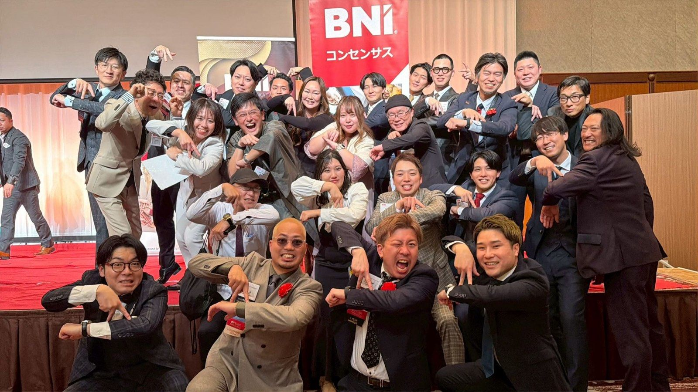

<!--
  BNI CONSENSUS / SEASON 11 自由枠ブロック
  CMS（HTMLPurifier）で使えるもの: class属性（サイトのBootstrap 3）、float、width/height/min/max、margin、padding、
  border、background(color/image/position/repeat)、font系、color、line-height、letter-spacing、text-align、
  white-space、vertical-align、table。
  使えないもの: display / position / overflow / opacity / border-radius / box-shadow / transform / gradient /
  writing-mode / clamp() / calc() / flex / grid / details。
  - 画像の src / url() はローカル確認用（img/...）。本番では jsDelivr のURLに置換する。
  - ##tyfcb## はCMSの動的タグ（千円単位）。
  - BOD告知ブロックは 2026/11/25 終了後に削除。
-->
<div style="color:#1a1a1a;font-size:16px;line-height:1.9;letter-spacing:0.04em;background:#fff;padding:48px 0 64px;">

<!-- ================= HERO ================= -->
<div style="background:#061a47 url(img/bg-wide.jpg) no-repeat center center;padding:120px 20px;text-align:center;">

</div>

<!-- ================= 集合写真 ================= -->
<div style="padding:56px 24px 0;">
<div style="max-width:960px;margin:0 auto;">

<div style="text-align:right;"><span style="background:#b8913a;color:#fff;font-family:'Helvetica Neue',Arial,sans-serif;font-size:12px;letter-spacing:0.3em;padding:6px 14px;">CONSENSUS MEMBERS</span></div>
</div>
</div>

<!-- ================= INTRO ================= -->
<div style="padding:88px 24px 104px;">
<div style="max-width:880px;margin:0 auto;">
<div class="hidden-xs" style="font-family:'Hiragino Mincho ProN','Yu Mincho','YuMincho','Noto Serif JP',serif;font-size:150px;line-height:1;color:#eef1f6;white-space:nowrap;text-align:right;margin:0 0 -110px;letter-spacing:0;">Consensus</div>
<div class="row">
<div class="col-sm-5">
<div class="clearfix" style="padding:0 0 32px;">
<div style="float:left;width:1.1em;margin-right:16px;padding-top:2.6em;font-family:'Hiragino Mincho ProN','Yu Mincho','YuMincho','Noto Serif JP',serif;font-size:42px;line-height:1.28;letter-spacing:0;font-weight:600;color:#0b2a6e;text-align:center;">伸<br>び<br>て<br>い<br>く</div>
<div style="float:left;width:1.1em;margin-right:16px;padding-top:1.3em;font-family:'Hiragino Mincho ProN','Yu Mincho','YuMincho','Noto Serif JP',serif;font-size:42px;line-height:1.28;letter-spacing:0;font-weight:600;color:#0b2a6e;text-align:center;">ビ<br>ジ<br>ネ<br>ス<br>は</div>
<div style="float:left;width:1.1em;font-family:'Hiragino Mincho ProN','Yu Mincho','YuMincho','Noto Serif JP',serif;font-size:42px;line-height:1.28;letter-spacing:0;font-weight:600;color:#0b2a6e;text-align:center;">紹<br>介<br>で</div>
</div>
</div>
<div class="col-sm-7" style="padding-top:64px;">
<div style="font-family:'Hiragino Mincho ProN','Yu Mincho','YuMincho','Noto Serif JP',serif;font-size:22px;font-weight:600;line-height:1.8;color:#0b2a6e;margin-bottom:20px;"><span style="white-space:nowrap;">福岡で挑む</span><span style="white-space:nowrap;">経営者たちの、</span><br><span style="white-space:nowrap;">信頼でつながる</span><span style="white-space:nowrap;">チーム。</span></div>
<div style="font-size:17px;line-height:2.1;">BNIコンセンサスチャプターは、1業種1名の経営者・事業者が集まるビジネスリファーラル組織です。毎週顔を合わせ、互いのビジネスを深く知り、信頼できるお客様を紹介し合う。その積み重ねが、メンバー一人ひとりの売上をつくっています。</div>
</div>
</div>
</div>
</div>

<!-- ================= 01 実績（紺帯） ================= -->
<div style="background:#061a47 url(img/bg-wide.jpg) no-repeat center center;">
<div style="background:rgba(6,26,71,0.93);padding:96px 24px;color:#fff;">
<div style="max-width:880px;margin:0 auto;">
<div style="font-family:'Helvetica Neue',Arial,sans-serif;font-size:13px;letter-spacing:0.3em;color:#d9b45f;font-weight:600;"><span style="font-family:'Hiragino Mincho ProN','Yu Mincho','YuMincho','Noto Serif JP',serif;font-size:15px;letter-spacing:0;font-weight:400;">01</span>&ensp;<span style="letter-spacing:0;">────</span>&ensp;RESULTS</div>
<div class="row" style="margin-top:40px;">
<div class="col-sm-7">
<div style="border-top:1px solid rgba(217,180,95,0.35);padding:24px 0;">
<div style="font-size:15px;color:#dfe3ec;">半年間でメンバーにもたらした売上</div>
<div style="font-family:'Hiragino Mincho ProN','Yu Mincho','YuMincho','Noto Serif JP',serif;font-size:66px;font-weight:600;line-height:1.25;letter-spacing:0.02em;color:#e2c47a;white-space:nowrap;">##tyfcb##<span style="font-size:22px;color:#d9b45f;margin-left:6px;">千円</span></div>
</div>
</div>
<div class="col-sm-5">
<div style="border-top:1px solid rgba(217,180,95,0.35);padding:24px 0;">
<div style="font-size:15px;color:#dfe3ec;">加入初年度の売上向上</div>
<div style="font-family:'Hiragino Mincho ProN','Yu Mincho','YuMincho','Noto Serif JP',serif;font-size:66px;font-weight:600;line-height:1.25;color:#e2c47a;white-space:nowrap;">20<span style="font-size:22px;color:#d9b45f;margin-left:6px;">%</span></div>
<div style="font-size:13px;color:#aab3c7;">BNIメンバー全体の平均</div>
</div>
</div>
</div>

<!-- BOD告知（11/25終了後に削除） -->
<div style="margin-top:40px;border:1px solid #d9b45f;padding:24px 28px;">
<div style="font-family:'Helvetica Neue',Arial,sans-serif;font-size:13px;letter-spacing:0.3em;color:#d9b45f;font-weight:600;">EVENT</div>
<div style="font-family:'Hiragino Mincho ProN','Yu Mincho','YuMincho','Noto Serif JP',serif;font-size:25px;font-weight:600;color:#fff;line-height:1.5;">Business Open Day 第一弾</div>
<div style="font-size:15px;color:#dfe3ec;"><span style="white-space:nowrap;">2026.11.25 WED</span> — <span style="white-space:nowrap;">ビジネス・オープン・デー</span></div>
<div style="margin-top:10px;"><a href="visitorregistration?chapterId=34969" style="color:#d9b45f;font-weight:700;font-size:15px;text-decoration:none;border-bottom:1px solid #d9b45f;">参加を申し込む&ensp;→</a></div>
</div>
</div>
</div>
</div>

<!-- ================= 02 理念（ペーパー） ================= -->
<div style="background:#f6f3ec;padding:104px 24px;">
<div style="max-width:880px;margin:0 auto;">
<div style="font-family:'Helvetica Neue',Arial,sans-serif;font-size:13px;letter-spacing:0.3em;color:#b8913a;font-weight:600;"><span style="font-family:'Hiragino Mincho ProN','Yu Mincho','YuMincho','Noto Serif JP',serif;font-size:15px;letter-spacing:0;font-weight:400;">02</span>&ensp;<span style="letter-spacing:0;">────</span>&ensp;PHILOSOPHY</div>
<div class="row" style="margin-top:48px;">
<div class="col-sm-6" style="margin-bottom:48px;">
<div class="clearfix">
<div style="float:left;width:1.1em;font-family:'Hiragino Mincho ProN','Yu Mincho','YuMincho','Noto Serif JP',serif;font-size:44px;line-height:1.2;letter-spacing:0;font-weight:600;color:#0b2a6e;text-align:center;">超<br>寄<br>り<br>添<br>い</div>
<div style="margin-left:76px;border-left:1px solid #d8cfbd;padding-left:24px;">
<div style="font-family:'Helvetica Neue',Arial,sans-serif;font-size:13px;letter-spacing:0.25em;color:#b8913a;font-weight:600;margin-bottom:12px;">CHAPTER PHILOSOPHY</div>
<div style="font-family:'Hiragino Mincho ProN','Yu Mincho','YuMincho','Noto Serif JP',serif;font-weight:600;font-size:21px;line-height:1.75;color:#0b2a6e;margin-bottom:16px;"><span style="white-space:nowrap;">常に相手の立場に立ち、</span><br><span style="white-space:nowrap;">考え、行動する</span><span style="white-space:nowrap;">チームであること。</span></div>
<div>双方向の意見を尊重し、高いレベルで意識を合わせることで、目的を達成できる強いチームをつくる。その想いから、2021年10月にコンセンサスチャプターは生まれました。</div>
</div>
</div>
</div>
<div class="col-sm-6">
<div class="clearfix">
<div style="float:left;width:1.1em;font-family:'Hiragino Mincho ProN','Yu Mincho','YuMincho','Noto Serif JP',serif;font-size:44px;line-height:1.2;letter-spacing:0;font-weight:600;color:#b8913a;text-align:center;">与<br>え<br>る<br>者<br>は</div>
<div style="margin-left:76px;border-left:1px solid #d8cfbd;padding-left:24px;">
<div style="font-family:'Helvetica Neue',Arial,sans-serif;font-size:13px;letter-spacing:0.25em;color:#b8913a;font-weight:600;margin-bottom:12px;">BNI BASIC PHILOSOPHY</div>
<div style="font-family:'Hiragino Mincho ProN','Yu Mincho','YuMincho','Noto Serif JP',serif;font-weight:600;font-size:21px;line-height:1.75;color:#0b2a6e;margin-bottom:16px;">与えられる。<br>— Givers Gain<sup style="font-size:11px;">®</sup></div>
<div>自分よりも先に、まず他の人にビジネスの機会を届ける。そうすることで、やがて自分にもチャンスが巡ってくる。BNIの根幹にある考え方です。</div>
</div>
</div>
</div>
</div>
</div>
</div>

<!-- ================= 03 仕組み ================= -->
<div style="padding:104px 24px;">
<div style="max-width:880px;margin:0 auto;">
<div style="font-family:'Helvetica Neue',Arial,sans-serif;font-size:13px;letter-spacing:0.3em;color:#b8913a;font-weight:600;"><span style="font-family:'Hiragino Mincho ProN','Yu Mincho','YuMincho','Noto Serif JP',serif;font-size:15px;letter-spacing:0;font-weight:400;">03</span>&ensp;<span style="letter-spacing:0;">────</span>&ensp;HOW IT WORKS</div>
<div style="font-family:'Hiragino Mincho ProN','Yu Mincho','YuMincho','Noto Serif JP',serif;font-size:34px;font-weight:600;color:#0b2a6e;line-height:1.5;margin:20px 0 40px;"><span style="white-space:nowrap;">紹介が生まれる、</span><span style="white-space:nowrap;">3つの理由。</span></div>

<div class="clearfix" style="border-top:1px solid #1a1a1a;padding:32px 0;">
<div style="float:left;width:76px;font-family:'Hiragino Mincho ProN','Yu Mincho','YuMincho','Noto Serif JP',serif;font-size:44px;line-height:1;font-weight:600;color:#c9a24b;letter-spacing:0;">01</div>
<div style="margin-left:96px;"><div style="font-family:'Hiragino Mincho ProN','Yu Mincho','YuMincho','Noto Serif JP',serif;font-weight:600;font-size:22px;color:#0b2a6e;margin-bottom:8px;line-height:1.5;">1業種につき、1名だけ。</div><div>同じ業種のメンバーは1名のみ。競合がいないから、あなたの業種への紹介はすべてあなたに届きます。</div></div>
</div>
<div class="clearfix" style="border-top:1px solid #d6d6d6;padding:32px 0;">
<div style="float:left;width:76px;font-family:'Hiragino Mincho ProN','Yu Mincho','YuMincho','Noto Serif JP',serif;font-size:44px;line-height:1;font-weight:600;color:#c9a24b;letter-spacing:0;">02</div>
<div style="margin-left:96px;"><div style="font-family:'Hiragino Mincho ProN','Yu Mincho','YuMincho','Noto Serif JP',serif;font-weight:600;font-size:22px;color:#0b2a6e;margin-bottom:8px;line-height:1.5;">毎週の定例会と、1to1。</div><div>毎週水曜の朝に集まり、さらに個別面談「1to1」でお互いのビジネスを深く知る。その積み重ねが信頼になります。</div></div>
</div>
<div class="clearfix" style="border-top:1px solid #d6d6d6;border-bottom:1px solid #d6d6d6;padding:32px 0;">
<div style="float:left;width:76px;font-family:'Hiragino Mincho ProN','Yu Mincho','YuMincho','Noto Serif JP',serif;font-size:44px;line-height:1;font-weight:600;color:#c9a24b;letter-spacing:0;">03</div>
<div style="margin-left:96px;"><div style="font-family:'Hiragino Mincho ProN','Yu Mincho','YuMincho','Noto Serif JP',serif;font-weight:600;font-size:22px;color:#0b2a6e;margin-bottom:8px;line-height:1.5;">メンバー全員が、営業チームに。</div><div>メンバーそれぞれの人脈から、信頼に基づいた見込み客の紹介（リファーラル）が届きます。</div></div>
</div>
</div>
</div>

<!-- ================= 04 定例会 ================= -->
<div style="background:#f6f3ec;padding:104px 24px;">
<div style="max-width:880px;margin:0 auto;">
<div class="row">
<div class="col-sm-5" style="margin-bottom:40px;">
<div style="font-family:'Helvetica Neue',Arial,sans-serif;font-size:13px;letter-spacing:0.3em;color:#b8913a;font-weight:600;"><span style="font-family:'Hiragino Mincho ProN','Yu Mincho','YuMincho','Noto Serif JP',serif;font-size:15px;letter-spacing:0;font-weight:400;">04</span>&ensp;<span style="letter-spacing:0;">────</span>&ensp;MEETING</div>
<div style="font-family:'Hiragino Mincho ProN','Yu Mincho','YuMincho','Noto Serif JP',serif;font-size:34px;font-weight:600;color:#0b2a6e;line-height:1.5;margin:20px 0 16px;"><span style="white-space:nowrap;">水曜の朝、</span><br><span style="white-space:nowrap;">オンラインで。</span></div>
<div>毎週水曜日に定例会を開いています。6:30から入室できます。</div>
<div style="margin-top:16px;font-size:15px;"><span style="color:#b8913a;">●</span>&ensp;ビジターの方も参加する時間</div>
</div>
<div class="col-sm-7">
<div style="border-left:1px solid #cfc5b1;margin-left:6px;">
<div style="padding:0 0 24px 28px;"><span style="float:left;margin-left:-35px;color:#b8913a;font-size:13px;line-height:30px;">●</span><div style="font-family:'Hiragino Mincho ProN','Yu Mincho','YuMincho','Noto Serif JP',serif;font-size:22px;color:#b8913a;line-height:1.4;">6:35</div><div style="font-weight:700;font-size:17px;">ビジター様への事前説明</div></div>
<div style="padding:0 0 24px 28px;"><span style="float:left;margin-left:-35px;color:#b8913a;font-size:13px;line-height:30px;">●</span><div style="font-family:'Hiragino Mincho ProN','Yu Mincho','YuMincho','Noto Serif JP',serif;font-size:22px;color:#b8913a;line-height:1.4;">6:40</div><div style="font-weight:700;font-size:17px;">オープンネットワーキング</div><div style="font-size:15px;color:#555;">開会前に、メンバーと自由に話せる時間です。</div></div>
<div style="padding:0 0 24px 28px;"><span style="float:left;margin-left:-33px;color:#9a9a9a;font-size:9px;line-height:30px;">●</span><div style="font-family:'Hiragino Mincho ProN','Yu Mincho','YuMincho','Noto Serif JP',serif;font-size:22px;color:#8a8a8a;line-height:1.4;">7:00</div><div style="font-size:17px;">開会・ビジターの歓迎・BNIの紹介</div></div>
<div style="padding:0 0 24px 28px;"><span style="float:left;margin-left:-33px;color:#9a9a9a;font-size:9px;line-height:30px;">●</span><div style="font-family:'Hiragino Mincho ProN','Yu Mincho','YuMincho','Noto Serif JP',serif;font-size:22px;color:#8a8a8a;line-height:1.4;">7:20</div><div style="font-size:17px;">全メンバーのウィークリープレゼンテーション</div></div>
<div style="padding:0 0 24px 28px;"><span style="float:left;margin-left:-35px;color:#b8913a;font-size:13px;line-height:30px;">●</span><div style="font-family:'Hiragino Mincho ProN','Yu Mincho','YuMincho','Noto Serif JP',serif;font-size:22px;color:#b8913a;line-height:1.4;">7:45</div><div style="font-weight:700;font-size:17px;">ビジター様の25秒PR</div><div style="font-size:15px;color:#555;">あなたのビジネスを、メンバー全員に紹介できます。</div></div>
<div style="padding:0 0 24px 28px;"><span style="float:left;margin-left:-33px;color:#9a9a9a;font-size:9px;line-height:30px;">●</span><div style="font-family:'Hiragino Mincho ProN','Yu Mincho','YuMincho','Noto Serif JP',serif;font-size:22px;color:#8a8a8a;line-height:1.4;">7:55</div><div style="font-size:17px;">メインプレゼン・推薦の言葉・リファーラル発表</div></div>
<div style="padding:0 0 24px 28px;"><span style="float:left;margin-left:-35px;color:#b8913a;font-size:13px;line-height:30px;">●</span><div style="font-family:'Hiragino Mincho ProN','Yu Mincho','YuMincho','Noto Serif JP',serif;font-size:22px;color:#b8913a;line-height:1.4;">8:25</div><div style="font-weight:700;font-size:17px;">ビジター様の感想</div></div>
<div style="padding:0 0 0 28px;"><span style="float:left;margin-left:-33px;color:#9a9a9a;font-size:9px;line-height:30px;">●</span><div style="font-family:'Hiragino Mincho ProN','Yu Mincho','YuMincho','Noto Serif JP',serif;font-size:22px;color:#8a8a8a;line-height:1.4;">8:30</div><div style="font-size:17px;">閉会</div></div>
</div>
</div>
</div>
</div>
</div>

<!-- ================= 動画（紺帯） ================= -->
<div style="background:#061a47;padding:88px 24px;text-align:center;">
<div style="font-family:'Helvetica Neue',Arial,sans-serif;font-size:13px;letter-spacing:0.3em;color:#d9b45f;font-weight:600;">MOVIE</div>
<div style="font-family:'Hiragino Mincho ProN','Yu Mincho','YuMincho','Noto Serif JP',serif;font-size:30px;font-weight:600;color:#fff;line-height:1.5;margin:12px 0 36px;">動画でわかる、BNI。</div>
<div data-embed="KjmEDYvLy8c" class="youtube-iframe" data-width="560" data-height="315"><a href="javascript:;" class="youtubeimg"></a></div>
</div>

<!-- ================= 05 業種 ================= -->
<div style="padding:104px 24px;">
<div style="max-width:880px;margin:0 auto;">
<div style="font-family:'Helvetica Neue',Arial,sans-serif;font-size:13px;letter-spacing:0.3em;color:#b8913a;font-weight:600;"><span style="font-family:'Hiragino Mincho ProN','Yu Mincho','YuMincho','Noto Serif JP',serif;font-size:15px;letter-spacing:0;font-weight:400;">05</span>&ensp;<span style="letter-spacing:0;">────</span>&ensp;MEMBERS</div>
<div style="font-family:'Hiragino Mincho ProN','Yu Mincho','YuMincho','Noto Serif JP',serif;font-size:34px;font-weight:600;color:#0b2a6e;line-height:1.5;margin:20px 0 12px;"><span style="white-space:nowrap;">いま、</span><span style="white-space:nowrap;">ここにいる業種。</span></div>
<div style="margin-bottom:40px;max-width:640px;"><span style="color:#b8913a;font-weight:700;">金色</span>の業種は、いま特にお待ちしています。ここにない業種の方も、ぜひ一度見学にお越しください。</div>

<div class="row">
<div class="col-sm-6"><div style="padding:22px 0;border-top:1px solid #d6d6d6;"><div style="margin-bottom:6px;"><span style="font-family:'Hiragino Mincho ProN','Yu Mincho','YuMincho','Noto Serif JP',serif;font-weight:600;font-size:20px;color:#0b2a6e;">保険・金融</span>&emsp;<span style="font-family:'Helvetica Neue',Arial,sans-serif;font-size:12px;letter-spacing:0.15em;color:#999;">FINANCE</span></div><div>保険の見直し／法人保険・社会保険の最適化／融資コンシェルジュ</div><div style="color:#b8913a;font-weight:700;font-size:15px;margin-top:6px;">＋ 住宅ローン代理店</div></div></div>
<div class="col-sm-6"><div style="padding:22px 0;border-top:1px solid #d6d6d6;"><div style="margin-bottom:6px;"><span style="font-family:'Hiragino Mincho ProN','Yu Mincho','YuMincho','Noto Serif JP',serif;font-weight:600;font-size:20px;color:#0b2a6e;">不動産・建築</span>&emsp;<span style="font-family:'Helvetica Neue',Arial,sans-serif;font-size:12px;letter-spacing:0.15em;color:#999;">REAL ESTATE</span></div><div>工務店／リノベ販売／不動産売買仲介／解体／足場工事／電気工事／看板</div><div style="color:#b8913a;font-weight:700;font-size:15px;margin-top:6px;">＋ 建築資材・一級建築士</div></div></div>
</div>
<div class="row">
<div class="col-sm-6"><div style="padding:22px 0;border-top:1px solid #d6d6d6;"><div style="margin-bottom:6px;"><span style="font-family:'Hiragino Mincho ProN','Yu Mincho','YuMincho','Noto Serif JP',serif;font-weight:600;font-size:20px;color:#0b2a6e;">士業</span>&emsp;<span style="font-family:'Helvetica Neue',Arial,sans-serif;font-size:12px;letter-spacing:0.15em;color:#999;">PROFESSIONAL</span></div><div>弁護士（相続・不動産）／弁護士（企業法務）／司法書士／税理士／社会保険労務士</div><div style="color:#b8913a;font-weight:700;font-size:15px;margin-top:6px;">＋ 行政書士・中小企業診断士・土地家屋調査士</div></div></div>
<div class="col-sm-6"><div style="padding:22px 0;border-top:1px solid #d6d6d6;"><div style="margin-bottom:6px;"><span style="font-family:'Hiragino Mincho ProN','Yu Mincho','YuMincho','Noto Serif JP',serif;font-weight:600;font-size:20px;color:#0b2a6e;">IT・コンサル</span>&emsp;<span style="font-family:'Helvetica Neue',Arial,sans-serif;font-size:12px;letter-spacing:0.15em;color:#999;">IT / CONSULTING</span></div><div>AI・DX開発／採用代行／集客支援／外国人人材紹介</div><div style="color:#b8913a;font-weight:700;font-size:15px;margin-top:6px;">＋ コピーライター・起業支援・VR/AR</div></div></div>
</div>
<div class="row">
<div class="col-sm-6"><div style="padding:22px 0;border-top:1px solid #d6d6d6;"><div style="margin-bottom:6px;"><span style="font-family:'Hiragino Mincho ProN','Yu Mincho','YuMincho','Noto Serif JP',serif;font-weight:600;font-size:20px;color:#0b2a6e;">クリエイティブ</span>&emsp;<span style="font-family:'Helvetica Neue',Arial,sans-serif;font-size:12px;letter-spacing:0.15em;color:#999;">CREATIVE</span></div><div>広告デザイン／HP構築／アニメーション動画／ビデオ撮影／カメラマン／SNS運用／イラスト／スタイリスト</div><div style="color:#b8913a;font-weight:700;font-size:15px;margin-top:6px;">＋ 広告代理店・イベンター・EC/マーケティング・補助金/入札支援</div></div></div>
<div class="col-sm-6"><div style="padding:22px 0;border-top:1px solid #d6d6d6;"><div style="margin-bottom:6px;"><span style="font-family:'Hiragino Mincho ProN','Yu Mincho','YuMincho','Noto Serif JP',serif;font-weight:600;font-size:20px;color:#0b2a6e;">生活・サービス</span>&emsp;<span style="font-family:'Helvetica Neue',Arial,sans-serif;font-size:12px;letter-spacing:0.15em;color:#999;">LIFE / SERVICE</span></div><div>結婚相談所／遺品整理／エアコンクリーニング／暮らしの110番／出張買取／インドアゴルフ／携帯料金診断 ほか</div><div style="color:#b8913a;font-weight:700;font-size:15px;margin-top:6px;">＋ 冠婚葬祭・家事代行</div></div></div>
</div>
<div class="row">
<div class="col-sm-6"><div style="padding:22px 0;border-top:1px solid #d6d6d6;border-bottom:1px solid #d6d6d6;"><div style="margin-bottom:6px;"><span style="font-family:'Hiragino Mincho ProN','Yu Mincho','YuMincho','Noto Serif JP',serif;font-weight:600;font-size:20px;color:#0b2a6e;">美容・健康</span>&emsp;<span style="font-family:'Helvetica Neue',Arial,sans-serif;font-size:12px;letter-spacing:0.15em;color:#999;">BEAUTY / HEALTH</span></div><div>ヘアサロン／接骨院／フィットネス開業支援／スキンケア／筋膜リリース／美容漢方薬局</div><div style="color:#b8913a;font-weight:700;font-size:15px;margin-top:6px;">＋ ネイリスト・アイリスト・ブライダルプランナー</div></div></div>
<div class="col-sm-6"><div style="padding:22px 0;border-top:1px solid #d6d6d6;border-bottom:1px solid #d6d6d6;"><div style="margin-bottom:6px;"><span style="font-family:'Hiragino Mincho ProN','Yu Mincho','YuMincho','Noto Serif JP',serif;font-weight:600;font-size:20px;color:#0b2a6e;">飲食</span>&emsp;<span style="font-family:'Helvetica Neue',Arial,sans-serif;font-size:12px;letter-spacing:0.15em;color:#999;">RESTAURANT</span></div><div>BAR／ロブスター鉄板焼き／鰻ともんじゃ／おばんざい／キッチンカー</div><div style="color:#b8913a;font-weight:700;font-size:15px;margin-top:6px;">＋ 酒屋・旅行/イベント企画</div></div></div>
</div>
<div style="margin-top:28px;"><a href="memberlist" style="color:#0b2a6e;font-weight:700;text-decoration:none;border-bottom:1px solid #0b2a6e;">メンバー一覧を見る&ensp;→</a></div>
</div>
</div>

<!-- ================= 06 見学 ================= -->
<div style="background:#f6f3ec;padding:104px 24px;">
<div style="max-width:880px;margin:0 auto;">
<div class="hidden-xs" style="font-family:'Hiragino Mincho ProN','Yu Mincho','YuMincho','Noto Serif JP',serif;font-size:150px;line-height:1;color:#ece4d3;white-space:nowrap;margin:-40px 0 -96px -8px;letter-spacing:0;">Welcome</div>
<div style="font-family:'Helvetica Neue',Arial,sans-serif;font-size:13px;letter-spacing:0.3em;color:#b8913a;font-weight:600;"><span style="font-family:'Hiragino Mincho ProN','Yu Mincho','YuMincho','Noto Serif JP',serif;font-size:15px;letter-spacing:0;font-weight:400;">06</span>&ensp;<span style="letter-spacing:0;">────</span>&ensp;VISIT</div>
<div style="font-family:'Hiragino Mincho ProN','Yu Mincho','YuMincho','Noto Serif JP',serif;font-size:34px;font-weight:600;color:#0b2a6e;line-height:1.5;margin:20px 0 0;">見学の日は、<br><span style="white-space:nowrap;">メンバー全員で</span><span style="white-space:nowrap;">お迎えします。</span></div>

<table style="width:100%;border-collapse:collapse;margin-top:40px;border-bottom:1px solid #1a1a1a;">
<tbody><tr>
<td style="width:27%;vertical-align:bottom;padding:0 1.5%;"></td>
<td style="width:35%;vertical-align:bottom;padding:0 1.5%;"></td>
<td style="width:38%;vertical-align:bottom;padding:0 1.5%;"></td>
</tr></tbody>
</table>

<div class="row" style="margin-top:32px;">
<div class="col-sm-4"><div style="padding:20px 0;border-bottom:1px solid #d8cfbd;"><span style="font-family:'Hiragino Mincho ProN','Yu Mincho','YuMincho','Noto Serif JP',serif;font-size:40px;line-height:1;font-weight:600;color:#c9a24b;">1</span>&ensp;<span style="font-family:'Hiragino Mincho ProN','Yu Mincho','YuMincho','Noto Serif JP',serif;font-weight:600;font-size:20px;color:#0b2a6e;">申し込む</span><div style="margin-top:10px;">下の「見学を申し込む」から、希望の日程を選んでください。</div></div></div>
<div class="col-sm-4"><div style="padding:20px 0;border-bottom:1px solid #d8cfbd;"><span style="font-family:'Hiragino Mincho ProN','Yu Mincho','YuMincho','Noto Serif JP',serif;font-size:40px;line-height:1;font-weight:600;color:#c9a24b;">2</span>&ensp;<span style="font-family:'Hiragino Mincho ProN','Yu Mincho','YuMincho','Noto Serif JP',serif;font-weight:600;font-size:20px;color:#0b2a6e;">案内が届く</span><div style="margin-top:10px;">ビジターホストから、Zoomの参加URLと当日の流れをお送りします。</div></div></div>
<div class="col-sm-4"><div style="padding:20px 0;border-bottom:1px solid #d8cfbd;"><span style="font-family:'Hiragino Mincho ProN','Yu Mincho','YuMincho','Noto Serif JP',serif;font-size:40px;line-height:1;font-weight:600;color:#c9a24b;">3</span>&ensp;<span style="font-family:'Hiragino Mincho ProN','Yu Mincho','YuMincho','Noto Serif JP',serif;font-weight:600;font-size:20px;color:#0b2a6e;">水曜の朝に参加</span><div style="margin-top:10px;">6:30から入室できます。7:45には25秒の事業PRタイムがあります。</div></div></div>
</div>

<div style="margin-top:64px;">
<div style="font-family:'Hiragino Mincho ProN','Yu Mincho','YuMincho','Noto Serif JP',serif;font-weight:600;font-size:22px;color:#0b2a6e;margin-bottom:12px;">よくあるご質問</div>
<div style="border-top:1px solid #1a1a1a;padding:20px 0;"><div style="font-weight:700;font-size:17px;"><span style="font-family:'Hiragino Mincho ProN','Yu Mincho','YuMincho','Noto Serif JP',serif;color:#b8913a;margin-right:10px;">Q.</span>見学に費用はかかりますか？</div><div style="padding:8px 0 0 30px;">見学は無料です。</div></div>
<div style="border-top:1px solid #d8cfbd;padding:20px 0;"><div style="font-weight:700;font-size:17px;"><span style="font-family:'Hiragino Mincho ProN','Yu Mincho','YuMincho','Noto Serif JP',serif;color:#b8913a;margin-right:10px;">Q.</span>オンラインでどうやって参加しますか？</div><div style="padding:8px 0 0 30px;">お申し込みのあとにZoomの参加URLをお送りします。パソコンでもスマートフォンでも参加できます。</div></div>
<div style="border-top:1px solid #d8cfbd;padding:20px 0;"><div style="font-weight:700;font-size:17px;"><span style="font-family:'Hiragino Mincho ProN','Yu Mincho','YuMincho','Noto Serif JP',serif;color:#b8913a;margin-right:10px;">Q.</span>見学したら入会しないといけませんか？</div><div style="padding:8px 0 0 30px;">いいえ。まずは雰囲気を知っていただくための見学です。お気軽にご参加ください。</div></div>
<div style="border-top:1px solid #d8cfbd;border-bottom:1px solid #d8cfbd;padding:20px 0;"><div style="font-weight:700;font-size:17px;"><span style="font-family:'Hiragino Mincho ProN','Yu Mincho','YuMincho','Noto Serif JP',serif;color:#b8913a;margin-right:10px;">Q.</span>自分の業種のメンバーがすでにいる場合は？</div><div style="padding:8px 0 0 30px;">1業種1名のため、同じ業種では入会できません。ただし、あなたのビジネスと相性の良いメンバーをご紹介することはできます。</div></div>
</div>
</div>
</div>

<!-- ================= CTA ================= -->
<div style="background:#061a47 url(img/bg-wide.jpg) no-repeat center center;">
<div style="background:rgba(6,26,71,0.78);padding:112px 24px;text-align:center;color:#fff;">
<div style="font-family:'Helvetica Neue',Arial,sans-serif;font-size:13px;letter-spacing:0.3em;color:#d9b45f;font-weight:600;">JOIN US</div>
<div style="font-family:'Hiragino Mincho ProN','Yu Mincho','YuMincho','Noto Serif JP',serif;font-size:42px;font-weight:600;line-height:1.5;color:#fff;margin:16px 0 20px;"><span style="white-space:nowrap;">一歩、</span><span style="white-space:nowrap;">挑んでみませんか。</span></div>
<div style="font-size:17px;color:#e6e9f0;margin-bottom:40px;"><span style="white-space:nowrap;">まずは定例会の見学から。</span><br><span style="white-space:nowrap;">あなたのビジネスを、</span><span style="white-space:nowrap;">私たちに紹介してください。</span></div>
<div style="line-height:1;padding:18px 0;"><a href="visitorregistration?chapterId=34969" style="background:#d9b45f;color:#061a47;font-weight:700;font-size:18px;letter-spacing:0.12em;padding:20px 44px;text-decoration:none;border:1px solid #f0d896;">見学を申し込む&ensp;→</a></div>
<div style="margin-top:36px;"><a href="https://www.instagram.com/bni.consensus/" target="_blank" rel="noopener" style="color:#fff;font-size:15px;text-decoration:none;border-bottom:1px solid #c8cedb;">Instagramで活動を見る&ensp;→</a></div>
</div>
</div>

</div>
